|
some more kiddy pics. i think that's all for now. 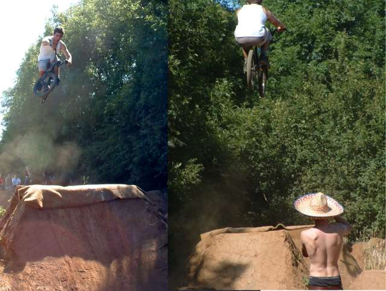 that nick guy is dangerous. big tuck over second in second line. that's joe with the mexican hat. 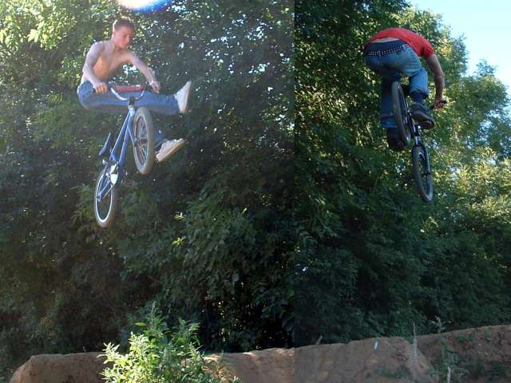 no foot can = good. pipe turndown - it's an amazing sight. below that - tinhead with a lazy table. he was riding with glasses on! 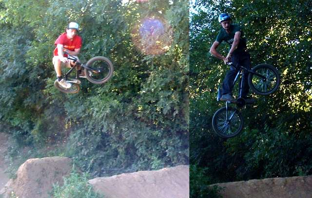 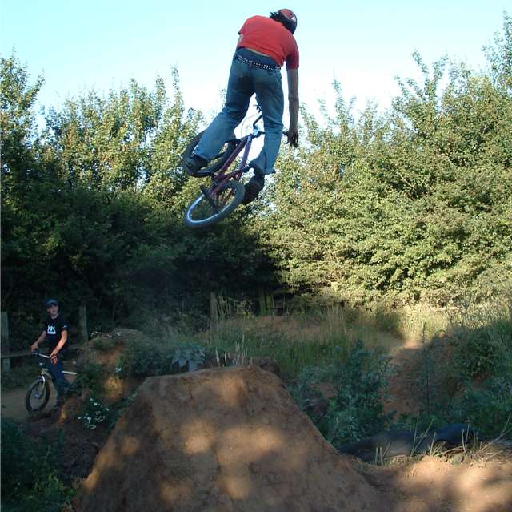 ~~~~~~~~~~~~~~~~~~~~~~~~~~~~~~~~~~~~~~~~~~~~~~~~~~~~~~~~~~~~~ more kiddy jam photos below, without captions cos i'm lazy. i hope these are a
bit different to other sites... 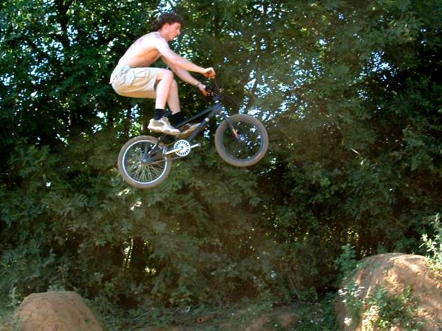 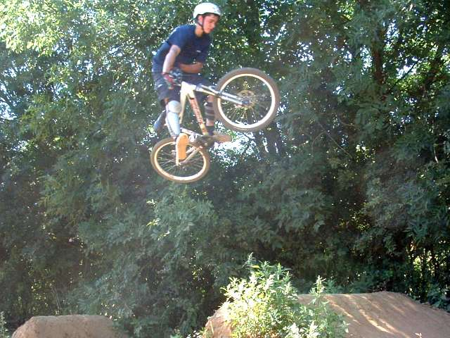 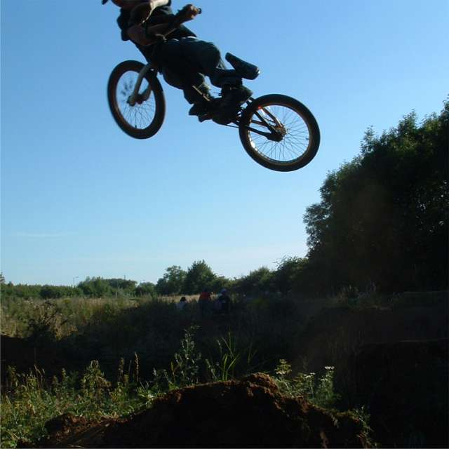 this hip is so good, i could just watch jack and liam and people ride it all day. 
_______________________________________________________________________________ this is just pictures of people who make
websites. if you go to their sites i'm sure they'll have lots of good kiddy
photos. kiddy is good, the locals have done a really good job and the riders on saturday were amazing. i will have a proper update sometime this
week. 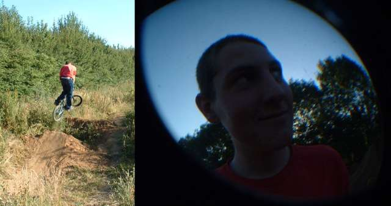 below is joe alderson who makes trails
not war. it was a lot of fun to watch him ride, as you could see he was
enjoying himself so much. he's also very good. 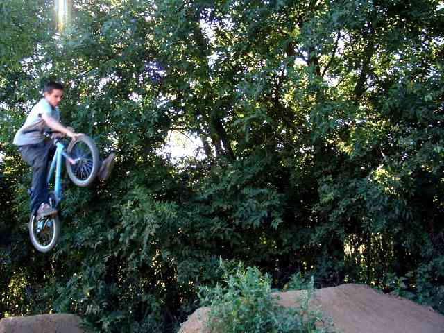 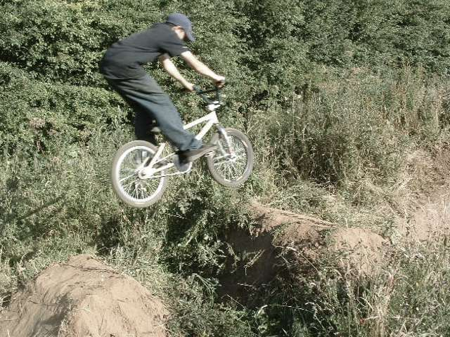 joe smalley was snapping away with his slr, so his pictures might take a bit
longer to be developed and scanned. the trailscene
guestbook is always worth a look though. 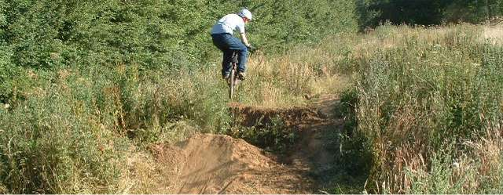 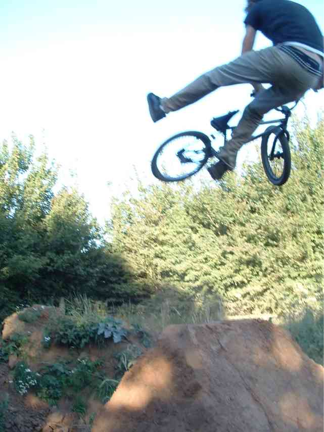 sometimes it's hard to see what is going on when you're taking photos. after i took this is heard a loud thud. it took me a while to realise that this guy had just tried a tailwhip. he didn't land it and lay there for a bit in pain. big respect for trying it. pipe tried to sell me an undertone t. it didn't work, but i'm promoting their
site like i said i would. it's undertone
apparel. 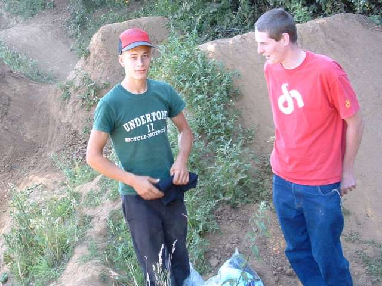 |